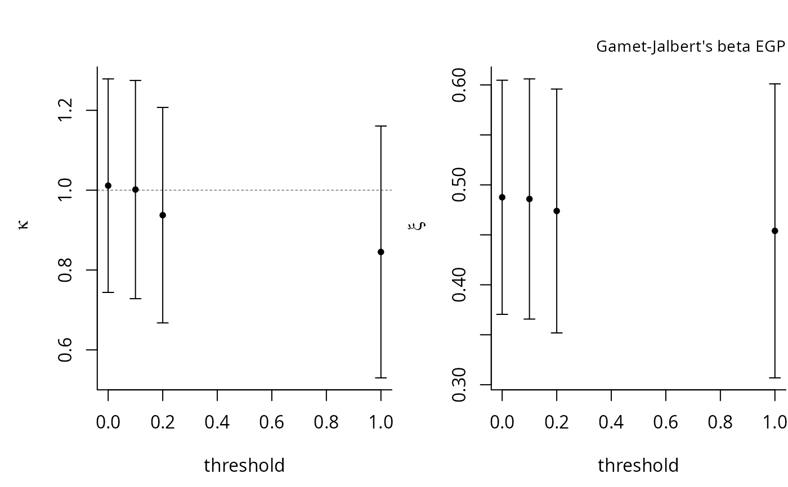
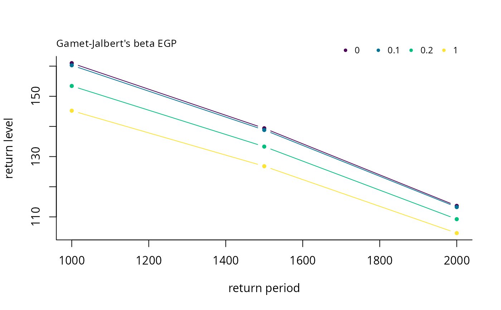
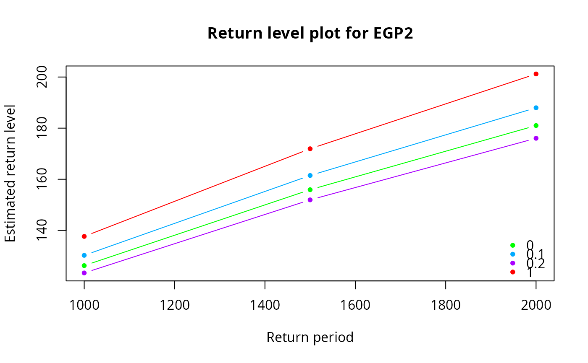
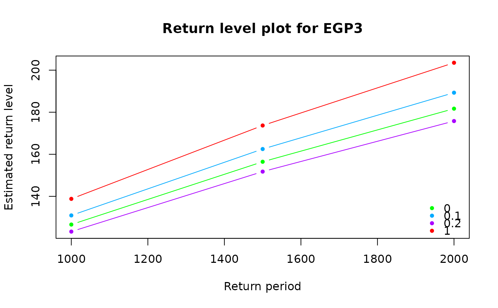

This function provides the log-likelihood and quantiles for the three different families presented in Papastathopoulos and Tawn (2013). The latter include an additional parameter, \(\kappa\). All three families share the same tail index as the generalized Pareto distribution, while allowing for lower thresholds. In the case \(\kappa=1\), the models reduce to the generalised Pareto.
egp.retlev gives the return levels for the extended generalised Pareto distributions
Arguments
- xdat
vector of observations, greater than the threshold
- thresh
threshold value
- par
parameter vector (\(\kappa\), \(\sigma\),\(\xi\)).
- model
a string indicating which extended family to fit
- show
logical; if
TRUE, print the results of the optimization- p
extreme event probability;
pmust be greater than the rate of exceedance for the calculation to make sense. See Details.- plot
boolean indicating whether or not to plot the return levels
Value
egp.ll returns the log-likelihood value.
egp.retlev returns a plot of the return levels if plot=TRUE and a matrix of return levels.
Details
For return levels, the p argument can be related to \(T\) year exceedances as follows:
if there are \(n_y\) observations per year, than take p
to equal \(1/(Tn_y)\) to obtain the \(T\)-years return level.
Usage
egp.ll(xdat, thresh, par, model=c('egp1','egp2','egp3'))
egp.retlev(xdat, thresh, par, model=c('egp1','egp2','egp3'), p, plot=TRUE)
References
Papastathopoulos, I. and J. Tawn (2013). Extended generalised Pareto models for tail estimation, Journal of Statistical Planning and Inference 143(3), 131--143.
Examples
set.seed(123)
xdat <- evd::rgpd(1000, loc = 0, scale = 2, shape = 0.5)
par <- fit.egp(xdat, thresh = 0, model = 'egp3')$par
p <- c(1/1000, 1/1500, 1/2000)
#With multiple thresholds
th <- c(0, 0.1, 0.2, 1)
opt <- tstab.egp(xdat, th, model = 'egp1')

egp.retlev(xdat, opt$thresh, opt$par, 'egp1', p = p)

opt <- tstab.egp(xdat, th, model = 'egp2', plots = NA)
egp.retlev(xdat, opt$thresh, opt$par, 'egp2', p = p)

opt <- tstab.egp(xdat, th, model = 'egp3', plots = NA)
egp.retlev(xdat, opt$thresh, opt$par, 'egp3', p = p)
